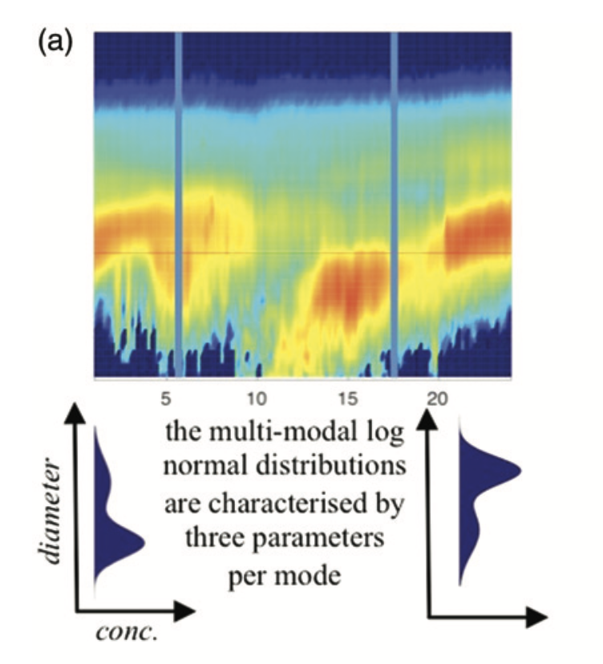
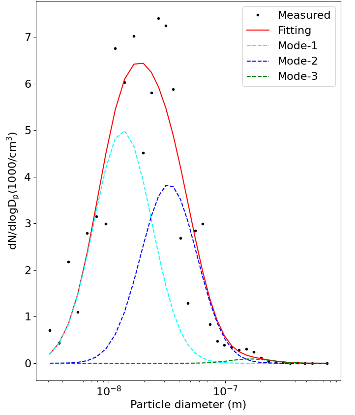
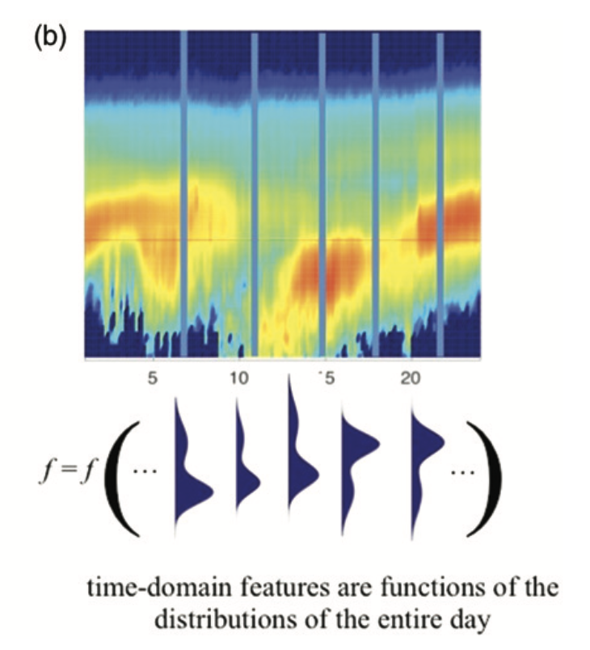
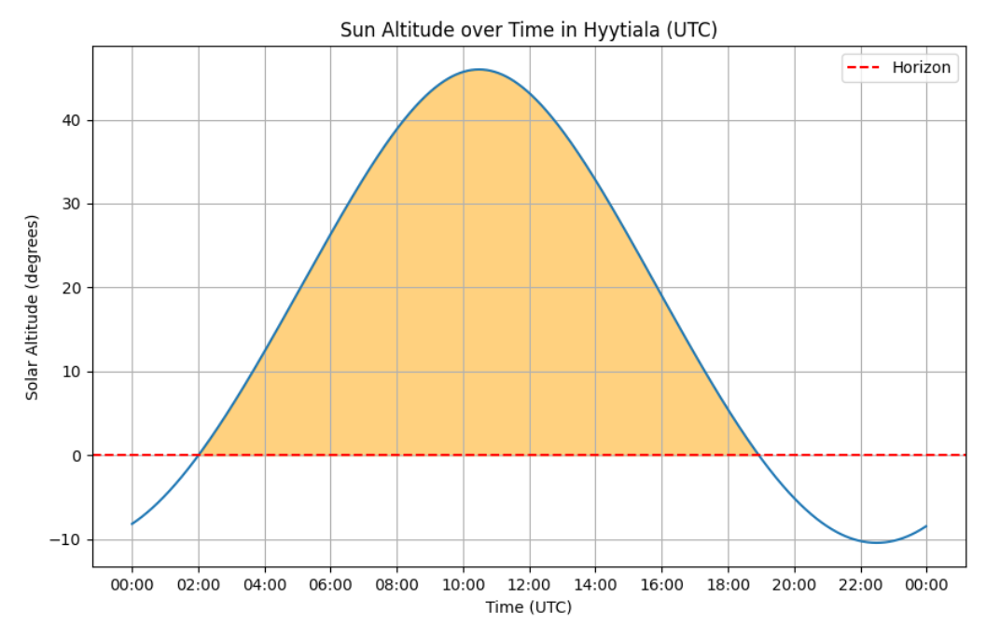

Machine and Deep Learning Methods for Automatic Identification of Atmospheric New Particle Formation
Abstract
Atmospheric new-particle formation (NPF) plays a crucial role in generating climate-influencing aerosol particles. Direct observation of NPF is achievable by tracking the evolution of aerosol particle size distributions in the environment. Such analysis allows researchers to determine the occurrence of NPF on specific days. Currently, the most dependable method for categorizing days into NPF event (class Ia, class Ib, class II) or non-event categories relies on manual visual analysis. However, this manual process is labor-intensive and subjective, particularly with long- term data series. These issues underscore the need for an automated classification system to classify these days more objectively.
This research introduces feature-engineering based machine learning classifiers to discern NPF event and non-event days at the SMEAR II station in Hyytiälä, Finland. The classification utilizes a suite of informative features derived from the multi-modal log-normal distribution fitted to the aerosol particle concentration data and time series analysis at various scales. The proposed machine learning classifiers can achieve an accuracy of more than 90% in identifying NPF event and non-event days. Moreover, they are able to reach an accuracy of around 80% in further categorizing days into detailed subcategories including class Ia, class Ib, class II, and non-event. Notably, the machine learning classifiers reliably predict all event Ia days where particle growth and formation rates are confidently measurable. Moreover, a comparative analysis is conducted between feature-engineering machine learning methods and image-based deep learning in terms of time efficiency and overall performance. The conclusion drawn is that through reasonable feature engineering, machine learning methods can match or even surpass deep learning approaches, particularly in scenarios where time efficiency is paramount. The results of this study strongly support further investigation into this area to improve our knowledge and proficiency in automating New Particle Formation (NPF) event detection.
Pipeline
This section outlines the comprehensive pipeline developed for the classification of New Particle Formation (NPF) events utilizing feature engineering-based machine learning techniques. Each stage of the pipeline is meticulously designed to process and analyze atmospheric particle data captured through Differential Mobility Particle Sizer (DMPS) systems.
Feature Calculation
|  |  |
| The ambient aerosol particle distribution at each time instance | 3 modes fitting of the ambient aerosol particle distribution |
In our analysis of particle size distribution, we employ a three-mode fitting algorithm to better understand the complexity of aerosol particles. By decomposing the overall particle size distribution at each instance of time into three distinct modes, the method provides clear insights into the dynamic processes of particle formation and evolution in the atmosphere.
Feature Extraction
|  |  |
| Time-domain features for one day | Sunrise and Sunset time |
In our approach to analyzing New Particle Formation (NPF) events, we focus on measurements collected exclusively during daylight hours based on the understanding that NPF mostly happens in the daytime. This targeted data selection makes sure that the dataset captures the most relevant atmospheric conditions conducive to NPF events and further enhances the predictive accuracy of our models.
AlexNet
For our purposes, AlexNet couldn’t identify NPF events without adjustments because the original model does not have understanding of the relevant NPF shapes. In this way, we make some customization to handle other image types and adopt a transfer-learning approach to retrain it for analyzing PSD images. Through modifying the final layers of AlexNet, we can adapt the network with fewer images than its initial training required. This efficient method employs the layered structure of CNNs: early layers extract complex features into more manageable abstractions, while the adjusted final layers are fine-tuned to predict specific classes.
Mask R-CNN
It is generally straightforward for humans to discern the occurrence of NPF events in graphical plots or to identify objects, such as cats, in digital images. This insight led us to imagine banana-shaped NPF events as distinct objects, suggesting that object detection methods used in digital image analysis could also be adapted to detect these specific NPF patterns. In this way, our approach utilizes a deep learning technique known as Mask R-CNN, which is an instance segmentation method proven effective in localizing objects within images. This model is particularly adept at delineating the spatial contours of objects, hence it’s employed to accurately outline the banana-shaped configuration of NPF events. Essentially, this method allows us to directly target the visual markers of NPF occurrences, and thus provides a novel solution to classifying these events
Acknowledgements
This project is funded by the Helsinki Institute for Information Technology (HIIT) and the Academy of Finland Research Fellowship.
Thanks to Martha Arbayani Zaidan, Tuomo Nieminen, and Tareq Hussein for their advice and help.
The website template was borrowed from Michaël Gharbi and Ref-NeRF.